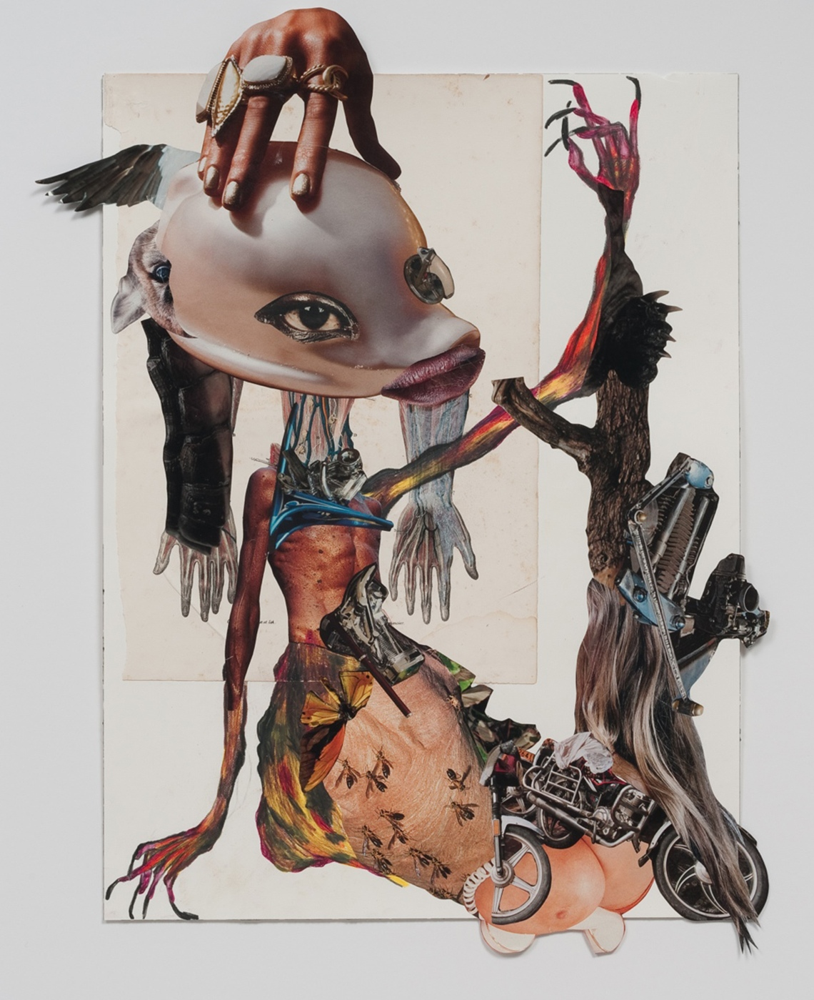
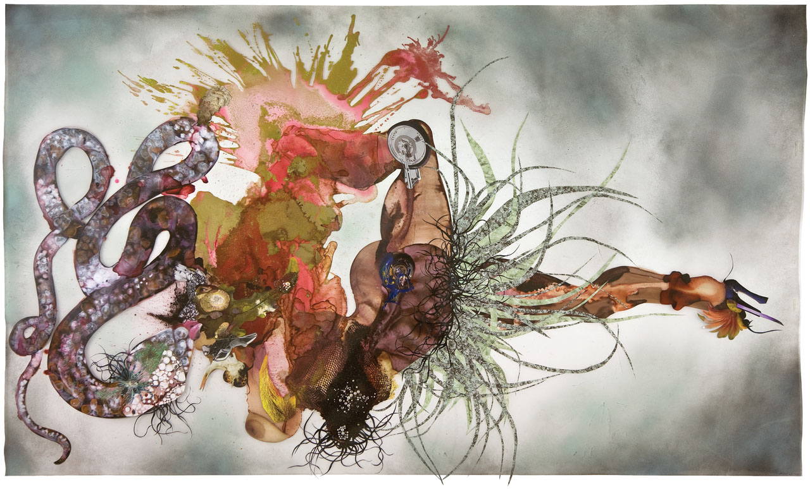
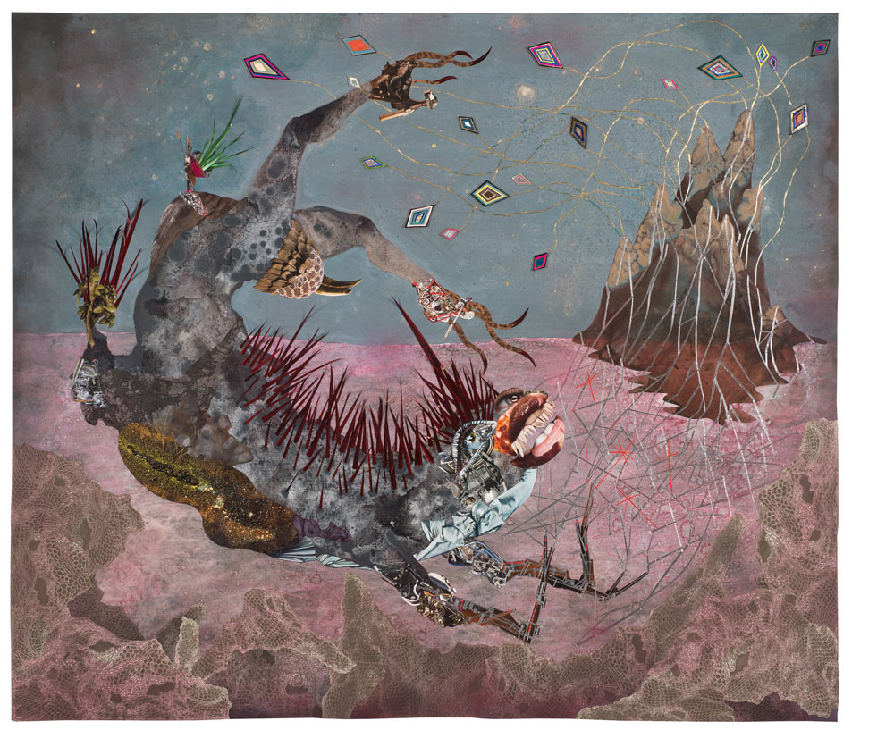
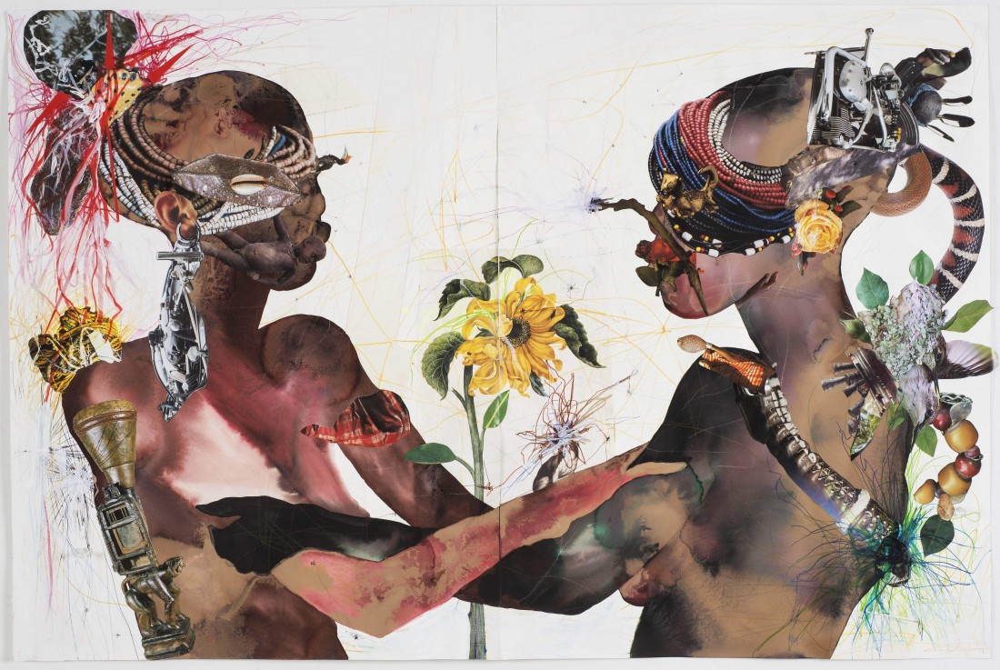
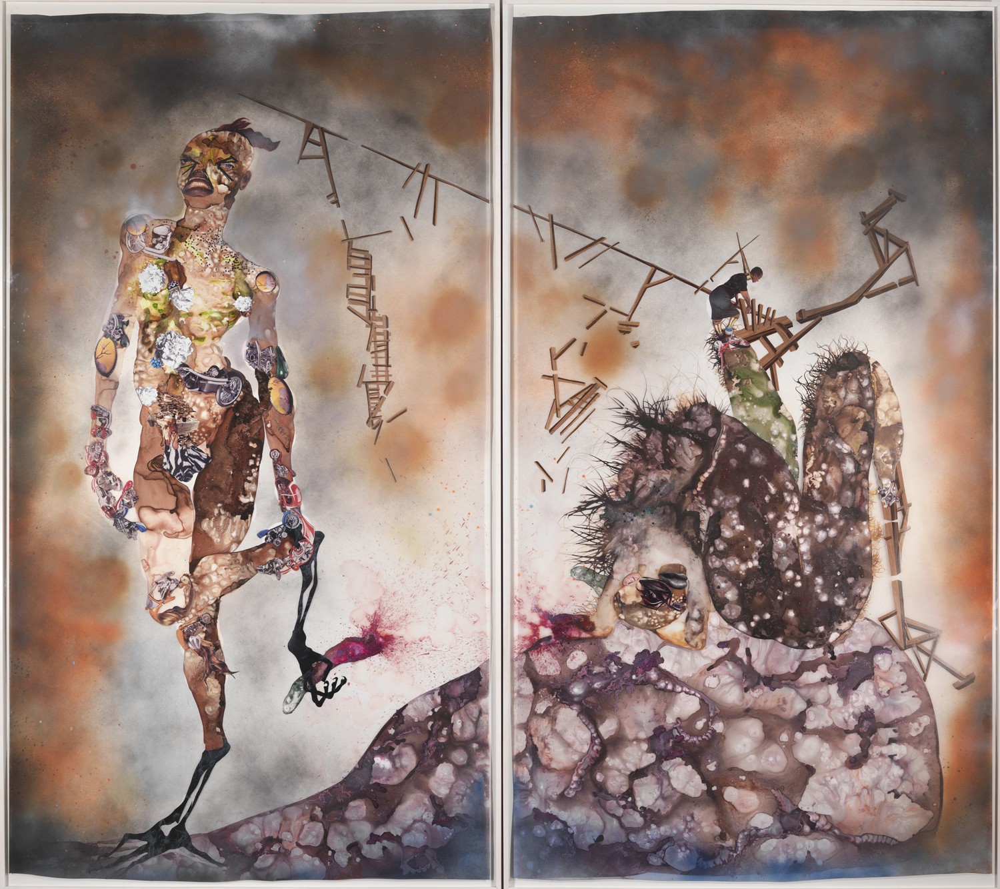
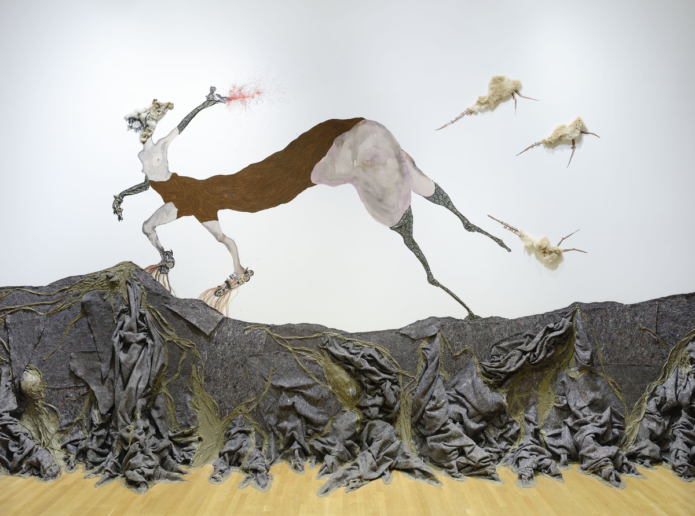
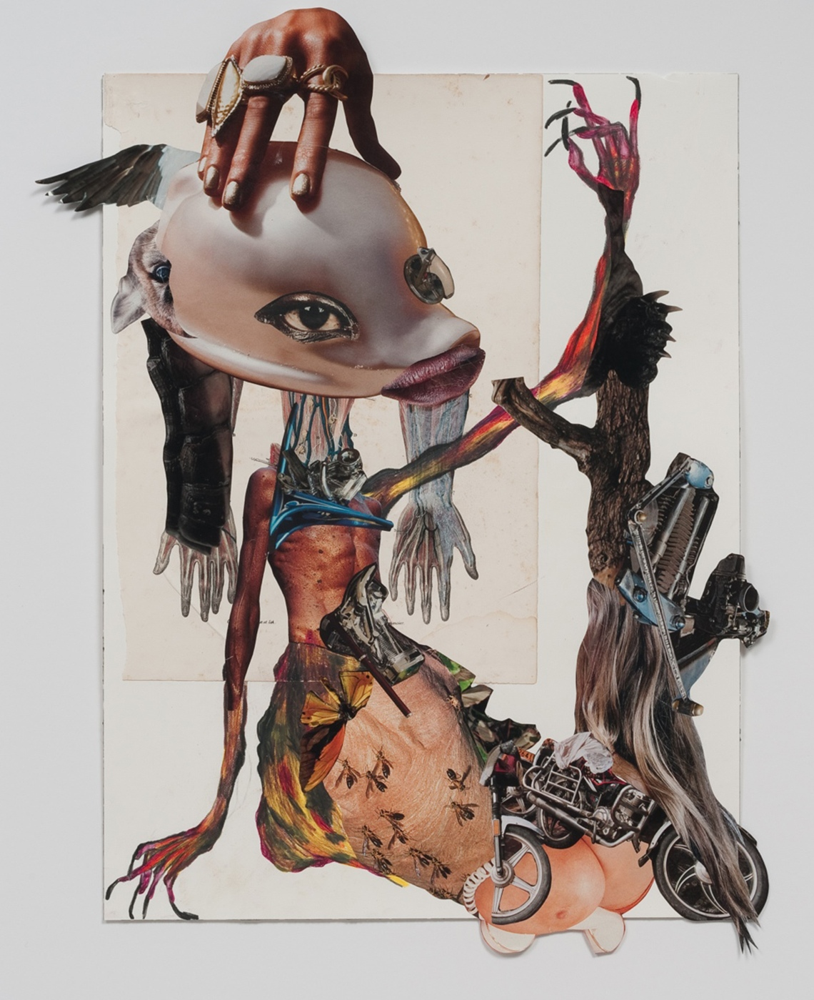
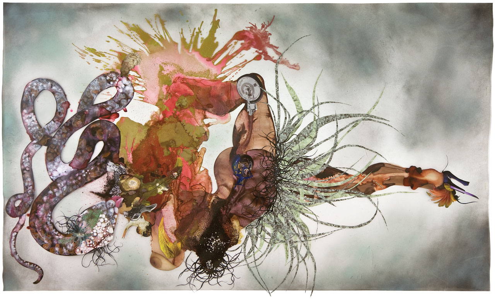
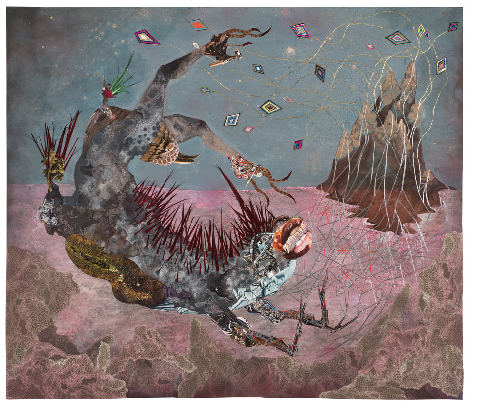
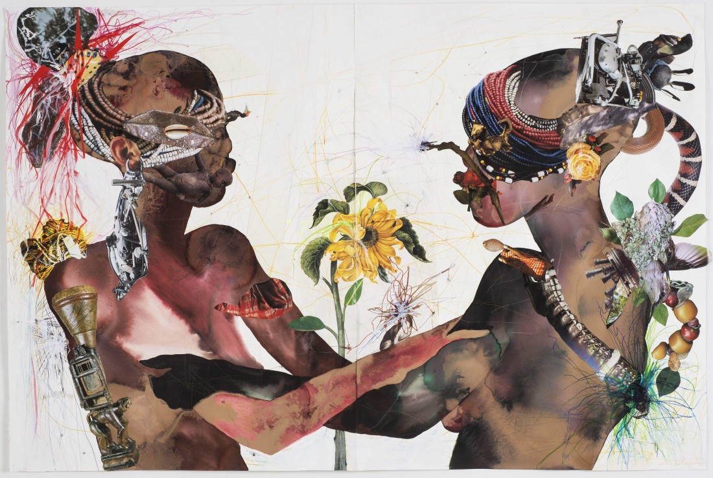
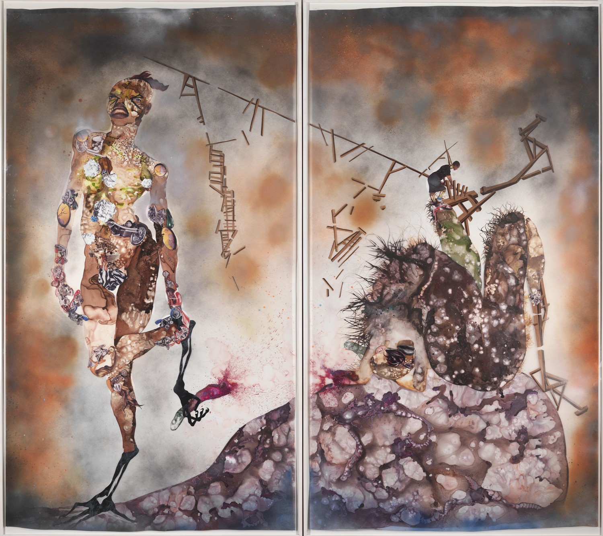
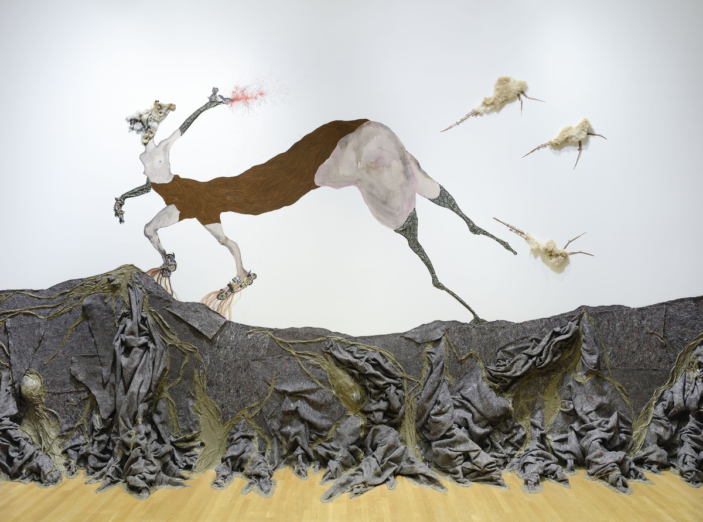
Wangechi Mutu (born 22 June 1972 in Nairobi, Kenya) is an artist and sculptor who lives and works in Brooklyn, New York. Mutu is considered by many to be one of the most important contemporary African artists of recent years, and her work has achieved much global acclaim.
Wangechi Mutu (born 22 June 1972 in Nairobi, Kenya) is an artist and sculptor who lives and works in Brooklyn, New York. Mutu is considered by many to be one of the most important contemporary African artists of recent years, and her work has achieved much global acclaim.
She participated in the 2008 Prospect 1 Biennial in New Orleans and the 2004 Gwangju Biennale in South Korea. Her work has been featured in major exhibitions including Greater New York at the P.S.1 Contemporary Art Center and the Museum of Modern Art in New York, Black President: The Art and Legacy of Fela Anikulapo-Kuti at the New Museum of Contemporary Art in New York and the Barbican Centre in London, and USA Today at the Royal Academy in London.
On 23 February 2010, Wangechi Mutu was honoured by Deutsche Bank as their first "Artist of the Year". The prize included a solo exhibition at the Deutsche Guggenheim in Berlin. Titled My Dirty Little Heaven, the show travelled in June 2010 to the Wiels Center for Contemporary Art in Forest, Belgium.
She is represented by Barbara Gladstone in New York, Susanne Vielmetter Los Angeles Projects in Los Angeles and Victoria Miro Gallery in London.